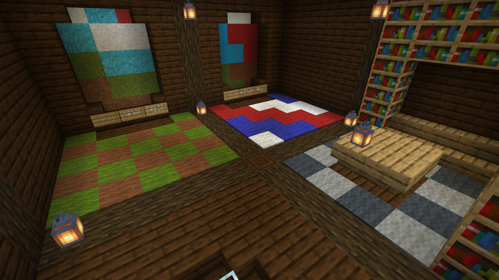

kwms MCServer
インフォメーション
kwms MCServerでプレイする前にこのインフォメーションに目を通してください。
サーバー全体
- サーバーの描画・シミュレーション距離は8です。
- ゲームモードはサバイバルワールドがイージー、クリエイティブワールドがピースフルになっています。
- 全ワールドで、PvPはオフです。
- 全ワールドで、ワールドへの干渉を行うにはビルダーグループに参加する必要があります。詳しくは、サーバー管理者（.kwms6354）にお問い合わせください。
サーバーロビー
- サーバーに初めて参加すると、まずはサーバーロビーにスポーンします。

サーバーロビー
- 現在、サーバーロビーにはポータルが2つあり、それぞれ「サバイバルワールド」と「クリエイティブワールド」につながっています。
- ポータルを通ると、それぞれのワールドのポータルに移動します。
- サーバーロビーではビルダーグループに参加していてもワールドには干渉できません。
サバイバルワールド
- サバイバルワールドはイージーモードになっており、モンスターがスポーンします。
- サバイバルワールドのポータルは、周りがフェンスで囲まれておりモンスターなどからある程度保護されています。
- サバイバルワールドでワールドへの干渉を行うには、ビルダーグループに参加する必要があります。
クリエイティブワールド
- クリエイティブワールドでワールドへの干渉を行うには、ビルダーグループに参加する必要があります。